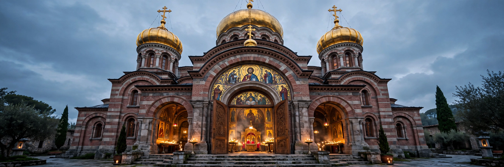

The Eastern Orthodox Church, officially the Orthodox Catholic Church, is the second-largest Christian church, with roughly 220 million baptised members. It is a communion of autocephalous (self-governing) churches, each led by its own patriarch or metropolitan, united in faith, sacraments and the canons of the first seven ecumenical councils.

| Eastern Orthodox Church | |
|---|---|
| Classification | Eastern Christianity |
| Theology | Orthodox theology |
| Governance | Communion of autocephalous churches |
| Members | ~220 million |
Orthodoxy traces its origins to the apostles and the early church in the Greek-speaking East of the Roman Empire. Tensions over papal authority, the filioque clause, and culture culminated in the East–West Schism of 1054. The church endured the fall of Constantinople (1453), Ottoman rule, and communist persecution, spreading especially through the Slavic missions of Saints Cyril and Methodius.
Orthodox doctrine rests on Scripture and Holy Tradition, the Nicene Creed in its original form, and seven sacraments (mysteries) including baptism, chrismation, Eucharist, confession, ordination, marriage and anointing. Worship centres on the Divine Liturgy, veneration of icons, chant, fasting seasons, and the goal of theosis — participation in the divine life. Married men may be ordained priests; bishops are chosen from monastics.
Major churches include the Ecumenical Patriarchate of Constantinople (first among equals), and the patriarchates/churches of Alexandria, Antioch, Jerusalem, Russia, Serbia, Romania, Bulgaria, Georgia, Greece and others.